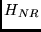
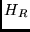
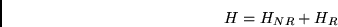

Next: MPI version
Up: MCHF
Previous: Dynamic memory management
Contents
The radial wave functions are stored in binary format in wfn.out.
For each term, say LS, a file LS.l is
produced with the same format as a <name>.j, but with an extra line that contains the S parameter for the
specific mass shift [#!book!#], Ssms.
The summry file also contains some additional information
including
- The mean radius, the expectation of .
- The mean square radius, the expectation of .
- The dipole-dipole operator, the expectation of
,
- The Isotope shift parameter,
.
The mean radius gives an indication of the size of the atomic system,
whereas the dipole-dipole operator (denoted as r.r in the summry
file) is relevant to long-range interactions [#!babb!#].
- wfn.inp Contains initial estimates for the wave function
- wfn.out The output of the mchf calculation
- cfg.inp Configuration list
- cfg.h File containing information for the memory allocation.
- summry Summary of wave function properties
- LSn.l Eigenvectors for a specific term, text file.
- yint.lst information about all expansions in cfg.inp
- c.lst coefficient and integrals for deriving the energy
- ih.nn.lst row indices of the matrix elements
Next: MPI version
Up: MCHF
Previous: Dynamic memory management
Contents
2001-10-11